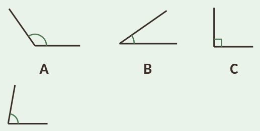
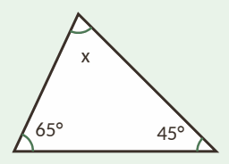
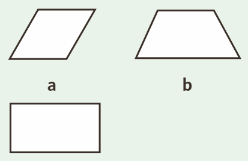
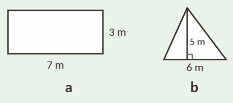
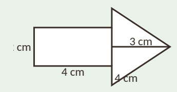
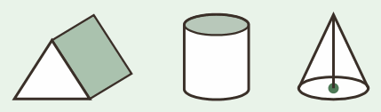

1Uppskatta vinklarna. Välj mellan 35°, 80°, 90° och 125°.

2Räkna ut vinkeln x.

3Två vinklar bildar tillsammans en rak vinkel. Den ena är 50°. Hur stor är den andra?
4Vilken sorts triangel är det? Vinklarna är
5Vad heter fyrhörningarna?

6Skriv två olika rektanglar som båda har omkretsen 18 cm.
7En kvadrat har sidan 6 cm. Hur stor är omkretsen?
8En cirkel har radien 4 cm.
9Hur stor area har figurerna?

10Skriv i den enhet som står inom parentes.
11På en ritning i skala 1:100 är ett rum 4 cm × 3 cm. Hur stor area har rummet i verkligheten?
12Räkna ut arean av en cirkel med radien 10 m. Använd π ≈ 3,14.
13Hur stor area har pilen? Rektangeln är 4 cm lång och 2 cm hög.

14Vad heter kropparna?

15Skriv som liter.
16En låda är 5 dm × 4 dm × 2 dm. Hur många liter rymmer den?
17En cylinder har bottenytan 50 cm² och höjden 10 cm. Räkna ut volymen.
18En kvadrat har arean 36 cm². Hur stor är omkretsen?
19En låda har volymen 48 dm³ och bottenytan 12 dm². Hur hög är lådan?